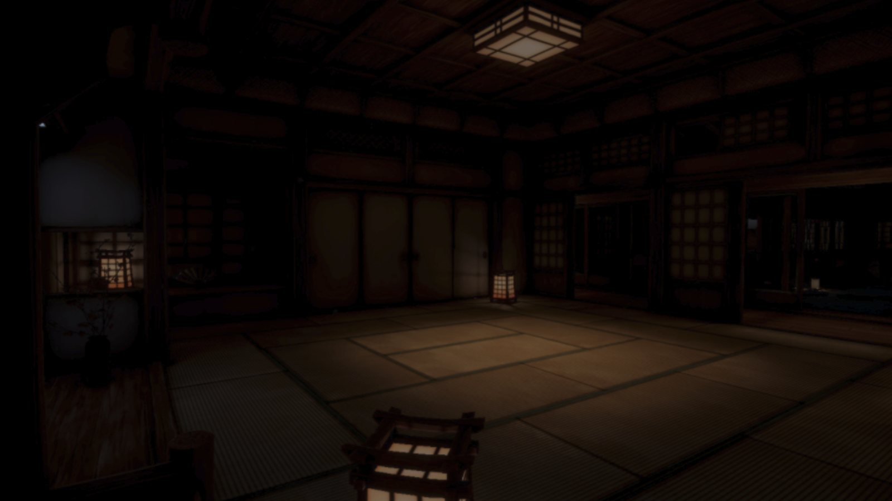
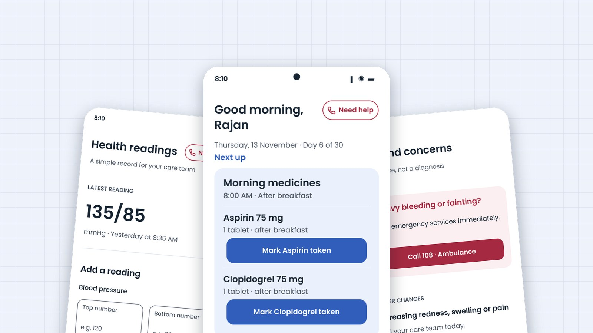
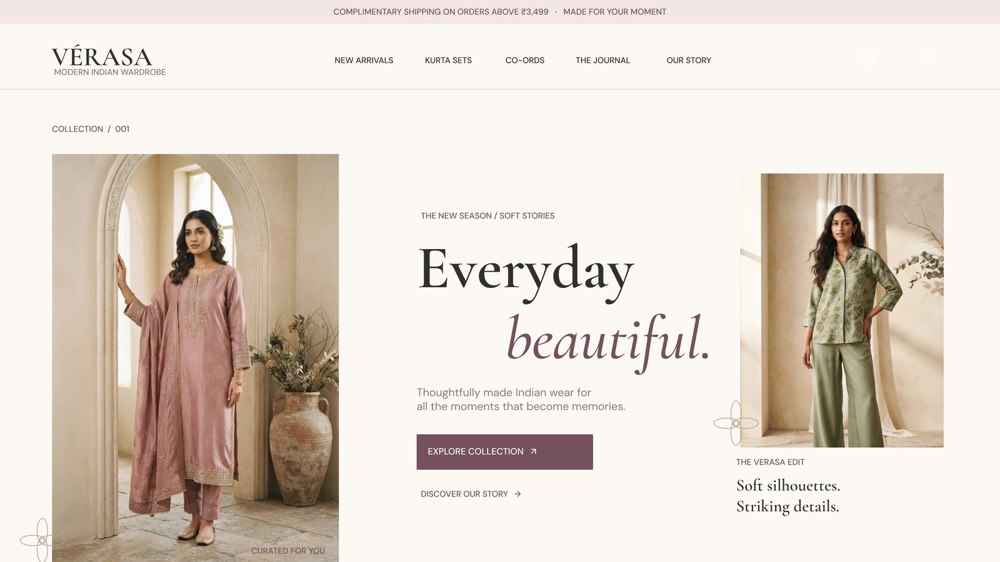
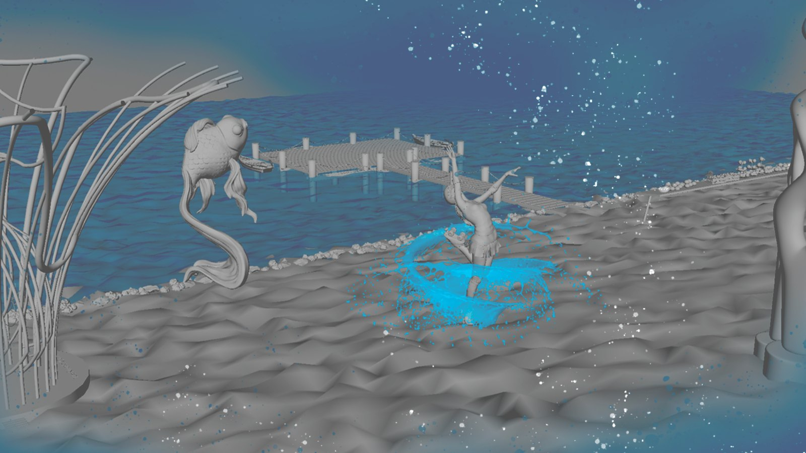
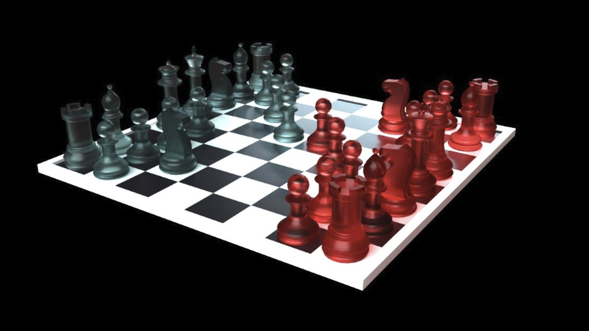
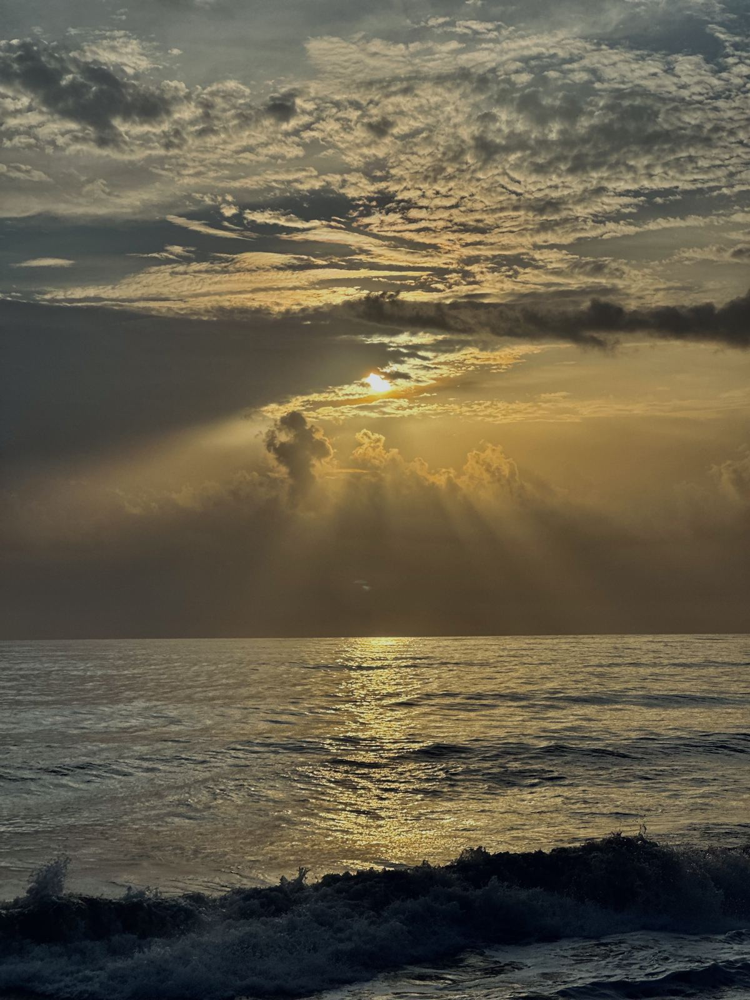
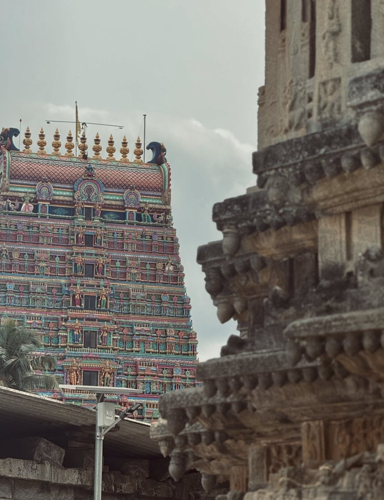
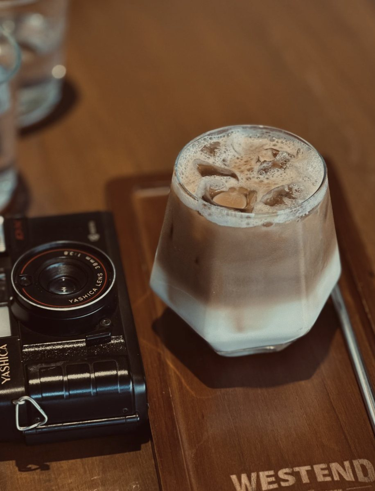

Reshma Shirin · UX/UI & Interaction Designer
I turn messy problems into clear, kind products.
Based in Ireland / India
Open to work
What I can help you with
Here’s where I’ve done it

Exploring VR for relaxation during migraine episodes
A near-dark, zero-reading, one-action VR relaxation concept for a user's lowest-capacity moment. First Class Honours thesis, University of Limerick.
View case study →
A calmer first 30 days after stent surgery
MedCare Companion turns discharge chaos into clear daily actions, with caregiver support on the patient's terms.
View case study →
An editorial storefront with confidence woven in
Vérasa is a research-led Indian-wear concept that makes fit, fabric and cost clear before the customer commits.
View case study →
From an ordinary transaction to a clue you can carry
Alibi turns bank statement data into monthly stories, spending clues and next-month watchlists.
View case study →
Imagining water tourism in 2032
Futures research and what-if ideation that led to a two-day water fest helping Gen Z bond with water.
View case study →
Beyond design
Social creatives, illustrations and experiments made purely for the joy of it.
View case study →How I think.
Design for users at their lowest capacity — in pain, anxious, distracted — and the experience works for everyone. My migraine VR work made every ounce of friction visible; that lens never left.
A beautiful screen that breaks under edge cases is not good design. Map the journey, the states, and the interaction logic first — the UI becomes almost inevitable after that.
The wrong word in a health alert causes panic; the right one builds trust. I treat tone of voice as a design system component — with rules, states, and reviews.
Shopify sections, ISO 13485, headset comfort limits, a small team's content capacity — real constraints make design decisions sharper, not smaller. I design inside them, not around them.
Test it, watch it fail, fix it, test again. The best iterations in my work came from being confidently wrong in front of five users.
Migraine-safe VR, post-surgery recovery, UPI behaviour stories, post-screen interfaces — given enough time and the right questions, no problem is too tangled to design for.
A little about me.
Hi, I'm Reshma Shirin, and I solve problems for a living. The fun kind: where "it's complicated" becomes "oh, I get it."
Designer by profession, interaction thinker by training, healthcare nerd by choice. I studied Interaction Design in Bangalore, took an MSc in Interaction & Experience Design at the University of Limerick (First Class Honours — thesis on VR for migraine relief), and I'm now deep in Medical Device Technology & Business at Griffith University, learning why regulated products are the ultimate design constraint.
My happy place is the intersection of care and craft: healthcare flows that calm people down, immersive experiences that respect the body, AI features that earn trust instead of demanding it. When I'm not pushing pixels, you'll find me at the water's edge, chasing a new trail, three hours deep in a playlist, hunting down FOOOODD worth photographing — or photographing everything else.
~ Reshma Shirin
Life between pixels.
The best design ideas often come from stepping away. Whether I'm at the water's edge, trying a new restaurant, or deep in a playlist — those moments fuel the curiosity and empathy that shape my work. — shot on life, developed into design





hover to pause the reel
Where I've worked.
- Running the visual side of 4–5 brands at the same time, including The Donuts Bakery & Café and Burgundy Coffee, keeping each one true to its own voice
- Building brand identities end to end: logos, typography, colour systems, guidelines and brand books
- Using AI to produce images and video for campaigns, and setting up repeatable workflows for the team
- Turning client briefs into concepts, presenting the thinking behind them, and keeping every account on schedule
- Created high-quality 3D models, textures, and animations for diverse projects
- Conceptualised and developed UI designs with the design team
- Worked with developers to integrate designs into functional applications
- Ran multiple projects in parallel without dropping quality or deadlines
- Client work for Toyota, Amneal, Intel, and Etisalat Dubai
- User research via surveys and interviews; analysed data for pain points
- Wireframes and interactive prototypes in Sketch and Adobe XD
- Designed web app interfaces and ran usability testing sessions
- Worked on Project 1-G3C Tool, logo, brochure, and DICV Farm
- User flows and journey maps to expose key touchpoints and friction
- Heuristic evaluations and cognitive walkthroughs; pushed for accessible, inclusive experiences
- Wrote design specifications for development teams
Where I learned.
What I work with.
UX & Product
Wireframing · Interaction Design · User-Centered Design · Information Architecture · Journey Mapping · Design Systems · Pattern Libraries · Inclusive Design
UI & Visual
Visual Design · Typography · Color Theory · Responsive Web · Component Libraries · Material Design · UI Documentation
Research & Strategy
User Research · Interviews · Usability Testing · Heuristic Evaluation · Competitive Benchmarking · Stakeholder Workshops · Experience Mapping
Tools
Figma · Adobe XD · Sketch · Miro · Illustrator · Photoshop · After Effects · Premiere Pro
Emerging Tech
Virtual Reality · Augmented Reality · 3D Modelling · Unity 3D · Blender · Rhino 3D · Maya 3D · AI for UX & Product Design
Healthcare & MedTech
ISO 13485 · FDA Regulations · Medical Device Design Cycle · Connected Health · Healthcare UX Research · Medical Data Integrity
Let's design something
clear & kind.
Need someone to untangle your UX headaches? That's me. I'm open to UX/UI, Product Design, Interaction Design, Healthcare UX, MedTech UX, AR/VR UX, and AI-assisted product design roles. Let's chat — about your product, or about why calm interfaces will win the next decade.